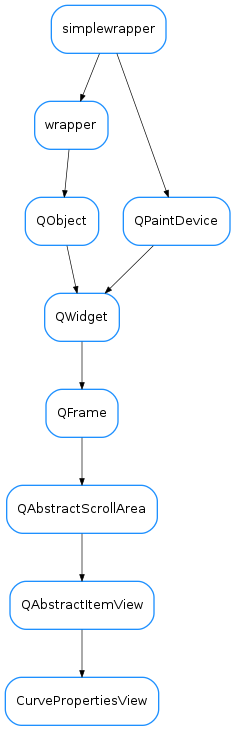

CurvePropertiesView¶

-
class
CurvePropertiesView(parent=None, designMode=False)[source]¶ Bases:
PyQt4.QtGui.QAbstractItemViewThis widget is a view on a CurvesTableModel. It displays and allows to change the properties of selected curve(s). Note that this widget does not allow to change selection by itself, but rather relies on some other view on the same model (like a QTableView) to alter the selection.
-
blockControlsSignals(block)[source]¶ blocks/unblocks the signals from all the properties controls
Parameters: block ( bool) – If True, signals are blocked. If False they are unblocked
-
getShownProperties()[source]¶ Returns a copy of the currently shown properties
Return type: CurveAppearancePropertiesReturns:
-
loadUi(filename=None, path=None)¶
-
selectionChanged(selected, deselected)[source]¶ Reimplemented. See
Qt.QAbstractItemView.selectionChanged()
-
showProperties(prop, blockSignals=True)[source]¶ Updates the control widgets to show the given properties.
- ..note:: that the signals of the controls may be temporally blocked to
- prevent loops. See the blockSignals parameter.
Parameters: - prop (
CurveAppearanceProperties) – the properties object containing what should be shown. If a given property is set to None, the corresponding widget will show a “neutral” display - blockSignals (
bool) – If True (default) the signals of the control widgets are blocked while updating them to avoid loops.
-